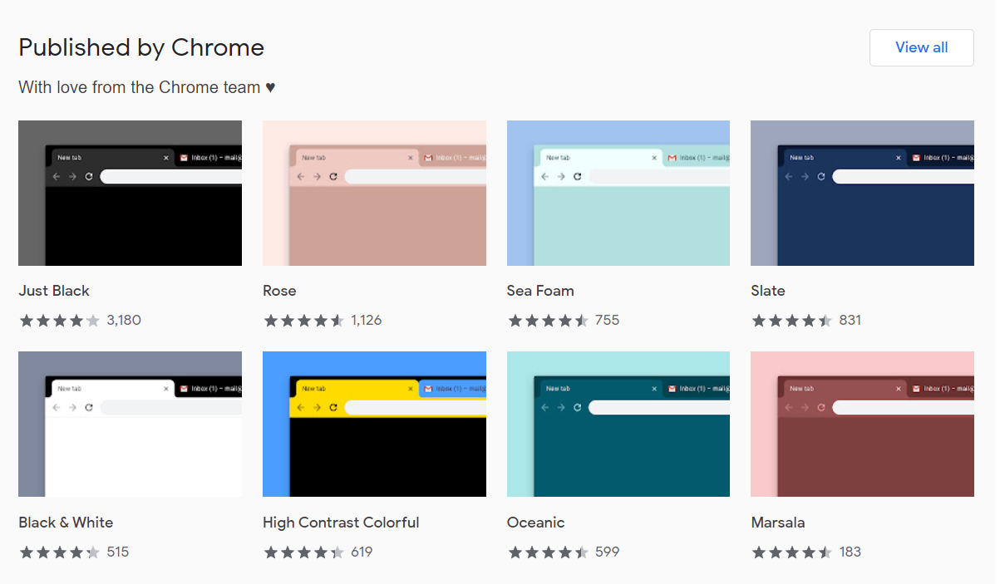
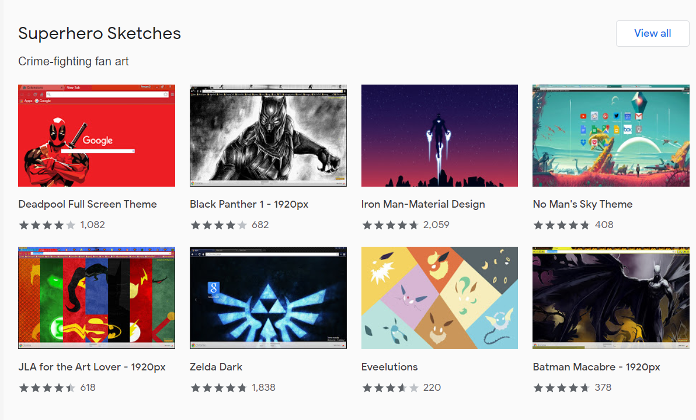
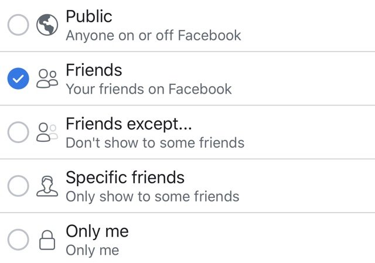

image credit: Screenshot from Google Chrome
Chooing Your
Favorite Themes!
Users can choose tehir favoraite themes to style their personal page

image credit: Screenshot from Google Chrome
Music
Chooing your favorite backgroud music
image credit: http://mytrickzzone.blogspot.com/2014/11/how-to-add-background-music-to-your.html
Recources: Youtube Video
Recources: https://www.youtube.com/watch?v=y7jOwzozumU

image credit: https://www.techlicious.com/tip/hide-facebook-friends-list/
Visibility Settings
Choose whom to share with
&&
View from whom